|
New Iranian two-stage solid propellant
missile "Sejil"
-- the renamed "Ashura" (Ghadr-110) --
Norbert Brügge,
Germany
Update: 12.10.2012
TEHRAN, 2007, Nov. 27 --- Iran
has built a new longer-range ballistic missile named "Ashura"
with a range of 2,000 kilometers , the defense minister
Mostafa Mohammad Najjar
said.
TEHRAN, 2008, Nov. 12 --- Iran test fired
a new generation of ground-to-ground
missile, the defence minister Mostafa Mohammad Najjar as said. "This is a two-stage
missile carrying two engines with combined solid fuel," Najjar said, adding that
the missile was named "Sejil".
TEHRAN, 2008, Nov. 18 --- Iran flew its new missile for the second time.
Iran's defense Minister Mustafa Najjer was sufficiently satisfied to release
impressive video footage showing what was clearly a previously unknown large
multistage ballistic missile roaring off a mobile launcher. In a series of interviews
after the test, Najjer stressed that the new "Ashura" missile is
renamed "Sejil", and had a range of more then 2,000
kilometers and that it was a two-stage design, powered by composite solid-propellant
rocket motors.
TEHRAN, 2009, May 20 --- Iranian President Mahmoud Ahmadinejad said that
the country successfully launched an advanced surface-to-surface missile
Sejil-2 with a range of about 2,000 km, the official
IRNA news agency reported. The Sejil missiles use solid
fuel and perform in two stages.
TEHRAN, 2009, Dec. 16 --- Iran has successfully tested an optimized version
of the solid-fuel Sejil-2 missile. This new version of the Sejil-2 is faster
during the powered flight portion of its trajectory and also during the re-entry
phase. It is also harder to detect for anti-missile systems, as it is covered
with anti-radar material. The new highly maneuverable missile is also more efficient
as it requires less amount of time for prelaunch preparations. The engine and
various fuels have been tested and the platform is now highly reliable.
|
Against first conjectures is this new large Iranian two-stage
solid propellant missile "Sejil" not based on Chinese
Dong Feng missiles
DF-11 or DF-15 because the diameter is approximately 1.25 m and not 0.88 or
1.10 m. An affinity to the Chinese M-18 (Pakistani Shaheen-2) with a diameter
of 1.40 m can not be recognized also. That means that the origin is unknown
up to now. It is reported that this missile was developed and produced under
the leadership of the Air and Space Organization Department of the Iranian
Ministry of Defense.
|
I can not believe
that Iran has developed the Sejil missile without technology transfer. For
other missiles, such an technology transfer was always detectable.
The little-known Soviet 5Ya27 missile and the South African “Arniston” missile
(Jericho-II in Israel) are the world's known two missiles with a diameter
of about 1.3 m. The Arniston (Jericho-II) missile is not more in consideration,
after a objection by Israeli experts.
|
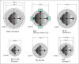
|
|
It
is likely that the Sejil based on older Soviet technology
e.g. OKB Fakel 5Ya27
ABM >>>>>>>>>>>
|
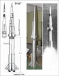
|
|
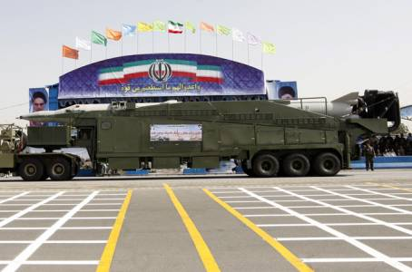
A military truck
carries a Sejil missile during the military parade Tehran on September 22,
2009
|
|
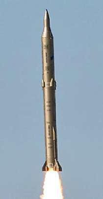
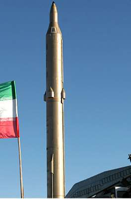
|
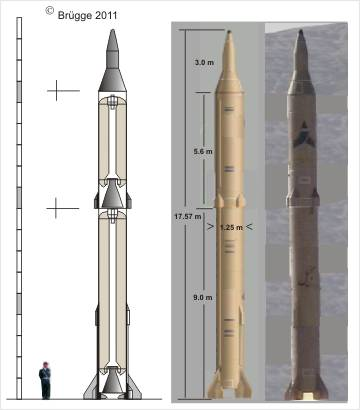
|
|
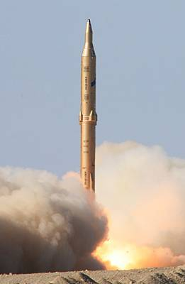
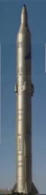
|
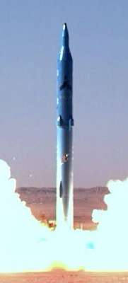

|
|
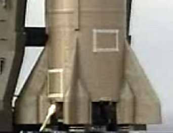
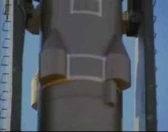
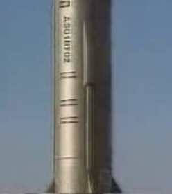
Pressure gas boxes for first stage thrusters
Second stage thrusters with four boxes
Pipeline and covered thrusters
|
|

|

|
|


|
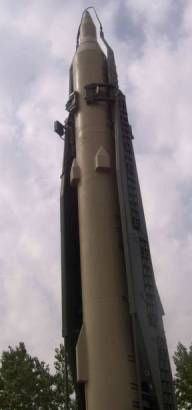 
|
|
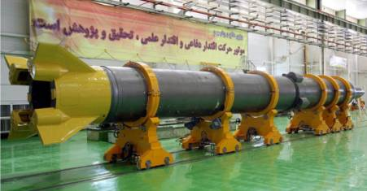
Open boxes at the rear
|
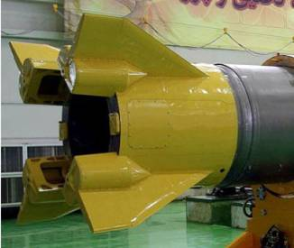
|
|
 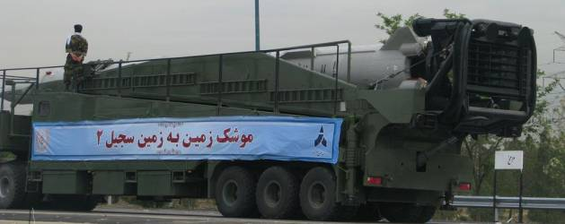
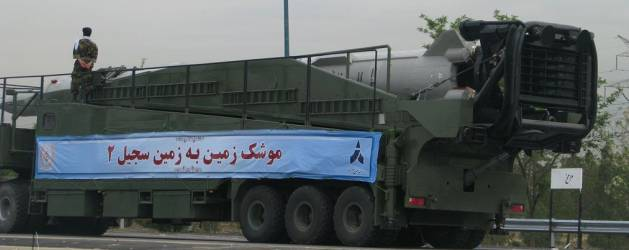
|
|
On the Sejil missile
are visible four little boxes at the base of both stages of the rocket.
They contain probably high-pressure-gas or hydrazine. From these tanks the
filling is supplied to thrusters in the middle part of the first stage and
at low end of the second stage. The thrusters are activates to stabilize the
flight of the rocket, as well as with the intent of avoidance of a potentially
collision after separation from the first stage, before the second stage ignites
On the pictures below, is to see that the boxes are closed by plates. It is
now clear that the jet vanes are welded on the plates.
|
|
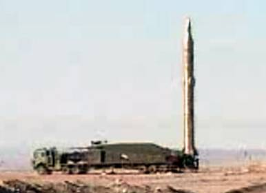
|
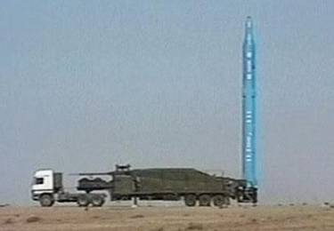
Sejil missile in launch position
|
|
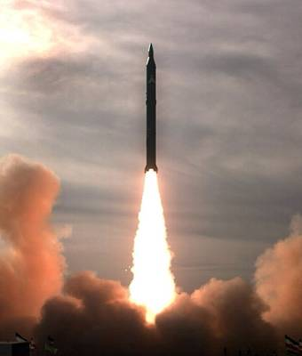
|
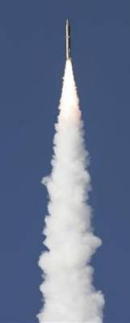
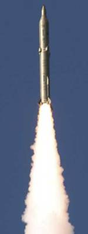
|
|
Sample calculation
|
Stage
|
Thrust s.l.
|
Isp s.l.
|
Thrust vac
|
Isp vac
|
Propellant
|
Burn time
|
Combustion
|
Total Imp
|
|
kN
|
N*s/kg
|
kN
|
N*s/kg
|
tons
|
s
|
t/s
|
MN*s
|
|
1
|
521.6 |
2158 |
592.5 |
2452 |
14.50 |
60 |
0.2417 |
35.5 |
| 2 |
|
|
170.8 |
2481 |
5.50 |
80 |
0.0688 |
13.6 |
|
|
That's new
|
|
Recently there was a missile exhibition
in Tehran and for the first time there are exact specifications for several
of Iran's missiles such as the Ghadr-I (called the Ghadr-F in Iran) and the
Sejil missiles. Also Iran displayed the specifications for the Qiam-1 and Shahab-2
as well. These have been accompanied by images. Also of interest is excellent
close up images of the Sejil's engine exhaust area, showing it uses jet vanes.
Here is the link to said information:
http://aboutiranblog.blogspot.com/2011/10/scared-defence-exhibition-in-baharestan_30.html
|
Sejil launch

|
|

|
Sejil
Max. Range: 2000 km
Total Weight: 23,623 kg
Length: 17.57 m
Diameter: 1.25 m
Warhead Weight: 500 kg
Propellant: Solid Fuel
Flight Time: 835 s
Flight Path: Ballistic |
|